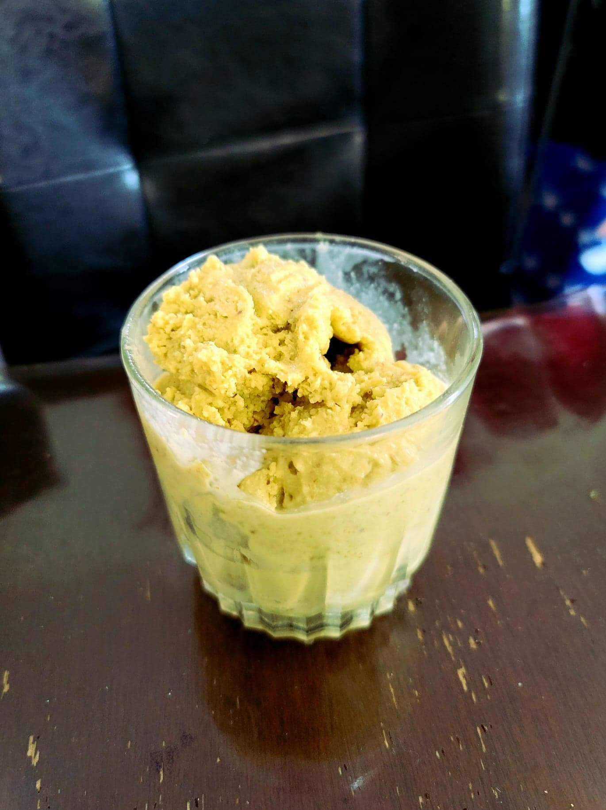

Pistachio Gelato

Ingredients:
- 5 oz or 142g Pistachios, shelled
- 2 cups Milk
- 1 cup Heavy cream
- 3/4 cup Sugar
- 1/4 tsp Salt
- 4 Egg yolks
Instructions:
- Optionally, blanch the pistachios and remove any brown skins. This will lead to a more vibrantly green colored gelato.
- Place the pistachios into a food processor and proccess for a few minutes or until it forms a smooth paste.
- Place the milk, cream, salt, and 1/2 cup Sugar into a pot. Heat over medium heat.
- Before the milk starts to steam, whisk together the eggs and remaining sugar into a large bowl. Pour 1/4 cup into the eggs while whisking constantly to temper the eggs. Then while whisking the milk constantly, Pour the eggs slowly into the milk. Whisk constantly as the milk heats. Once the milk reaches 170 degrees Fahrenheit, remove from heat immediately.
- Whisk the pistachio paste into the milk mixture until homogenous. Optionally use an immersion blender to ensure there are no clumps. Transfer the mixture to the fridge to chill completely.
- Once chilled, pour the mixture into an already churning ice cream maker. Let churn until soft serve consistency, about 40 minutes. Then transfer to a sealable container and place into a freezer until firm. Serve cold.